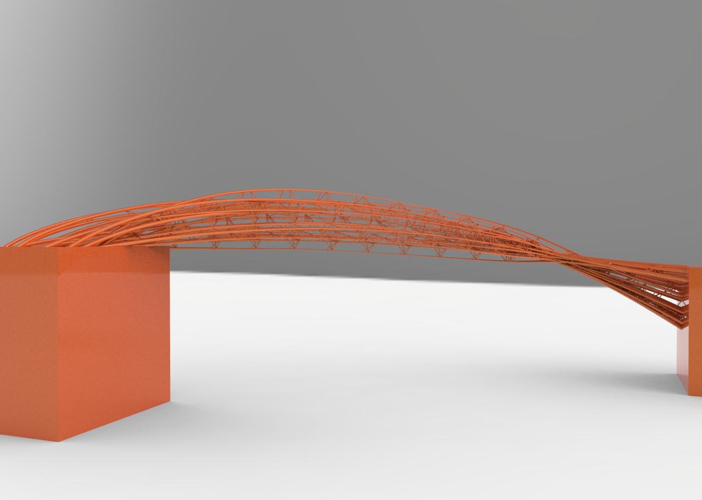

Rhino.Python - Swarm bridge
Swarm Behavior + Attractor : Agent methods: 1. Align : Move in the same direction as your neighbours. 2. Cohesion : Remain close to your neighbours. 3. Seperation : Avoid collisions with your neighbours. Attractor methods: (Controlling the shape) From starting points move to target points to create bridge. Using swarm simulation in Grasshopper is in this post: Swarm Python GH Component

import rhinoscriptsyntax as rs
import Rhino as rc
import time
import math
import scriptcontext as rc
import Rhino.Geometry as rg
from scriptcontext import escape_test
from random import *
rectX = 600
rectY = 600
class Runner:
def __init__(self, p, v):
self.p = p
self.v = v
self.a = rs.VectorCreate( (0,0,0),(0,0,0) )
self.ptList = []
def ptRun(self):
self.v = rs.VectorAdd(self.v, self.a)
v = rs.VectorLength(self.v)
if v > 15:
self.v = rs.VectorScale(rs.VectorUnitize(self.v), 15)
self.p = rs.VectorAdd(self.p, self.v)
self.a = rs.VectorCreate( (0,0,0),(0,0,0) )
self.ptList.append(self.p)
def flock(self):
self.separate(4.0)
self.cohesion(0.001)
self.align(0.1)
self.attractor(0.7)
def align(self, mag):
steer = rs.VectorCreate( (0,0,0) , (0,0,0) )
count = 0
for i in pts:
distance = rs.Distance(i.p, self.p)
if distance > 0 and distance < 40:
steer = rs.VectorAdd(steer, i.v)
count += 1
if count>0:
steer = rs.VectorScale(steer, 1.0/count)
steer = rs.VectorScale(steer, mag)
self.a = rs.VectorAdd(self.a, steer)
def cohesion(self, mag):
sum = rs.VectorCreate( (0,0,0) , (0,0,0) )
count = 0
for i in pts:
distance = rs.Distance(i.p, self.p)
if distance > 0 and distance < 60:
sum = rs.VectorAdd(sum, i.p)
count += 1
if count>0:
sum = rs.VectorScale(sum, 1.0/count)
steer = rs.VectorSubtract(sum, self.p)
steer = rs.VectorScale(steer, mag)
self.a = rs.VectorAdd(self.a, steer)
def separate(self, mag):
steer = rs.VectorCreate( (0,0,0) , (0,0,0) )
count = 0
for i in pts:
distance = rs.Distance(i.p, self.p)
if distance > 0 and distance < 30:
diff = rs.VectorSubtract(self.p, i.p)
diff = rs.VectorUnitize(diff)
diff = rs.VectorScale(diff, 1.0/distance)
steer = rs.VectorAdd(steer , diff)
count += 1
if count>0:
steer = rs.VectorScale(steer, 1.0/count)
steer = rs.VectorScale(steer, mag)
self.a = rs.VectorAdd(self.a, steer)
def attractor(self, mag):
attrPt = rs.VectorCreate((-800,-700,0) , (0,0,0))
steer = rs.VectorCreate( (0,0,0) , (0,0,0) )
diff = rs.VectorSubtract( attrPt, self.p )
diff = rs.VectorUnitize(diff)
steer = rs.VectorAdd(steer , diff)
steer = rs.VectorScale(steer, mag)
self.a = rs.VectorAdd(self.a, steer)
def drawLines(self):
for i in pts:
distance = rs.Distance(i.p, self.p)
if distance < 40 and distance > 0:
pt1 = rg.Point3d(i.p[0], i.p[1], i.p[2])
pt2 = rg.Point3d(self.p[0], self.p[1], self.p[2])
lns.append(rs.AddLine(pt1, pt2))
def drawPt(self):
pt = rs.AddPoint(self.p[0], self.p[1], self.p[2])
return pt
def setup():
global pts
pts = []
global lns
lns = []
numAG = 36
for i in range(numAG):
p = rs.VectorCreate( rs.AddPoint( 100*math.cos(i*2*math.pi/numAG), 100*math.sin(i*2*math.pi/numAG),0) , rs.AddPoint(0,0,0) )
v = rs.VectorCreate( rs.AddPoint( -randint(2,18),-randint(18,36),randint(-2,26) ) , rs.AddPoint(0,0,0 ) )
run1 = Runner(p, v)
pts.append(run1)
def run():
pos = []
vec = []
for i in pts:
pos.append(i.drawPt())
vec.append(i.v)
for i in pts:
i.flock()
i.ptRun()
if t > 10 and t%6==1:
i.drawLines()
def drawTime():
FPS = 30
last_time = time.time()
global t
t = 0
curves = []
# whatever the loop is...
while True:
# draw animation
t += 1
# pause so that the animation runs at 30 fps
new_time = time.time()
# see how many milliseconds we have to sleep for
# then divide by 1000.0 since time.sleep() uses seconds
sleep_time = ((1000.0 / FPS) - (new_time - last_time)) / 1000.0
if sleep_time > 0:
time.sleep(sleep_time)
last_time = new_time
run()
print t
if t > 108:
for k in pts:
curves.append(rs.AddCurve(k.ptList))
rs.EnableRedraw(False)
for crv in curves:
rs.AddPipe(crv, [0,0.5,1], [4,1,4], cap=2)
for ln in lns:
rs.AddPipe(ln, 0, 1, cap=2)
rs.EnableRedraw(True)
break
escape_test()
def main():
setup()
drawTime()
if __name__ == “__main__”:
main()